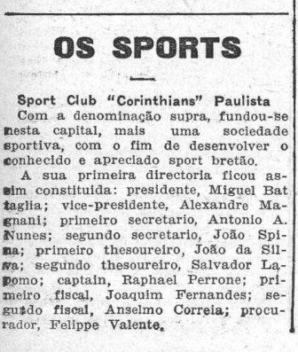
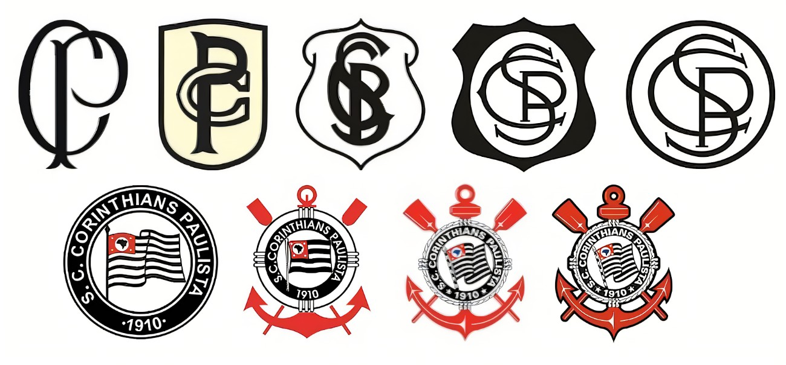
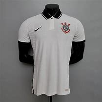
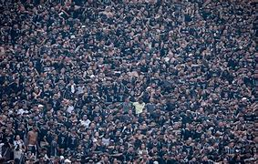

História do clube
O Corinthians, fundado em 1º de setembro de 1910, é um dos clubes mais populares do Brasil. Surgiu em São Paulo, inspirado por operários, para democratizar o futebol. É conhecido como "Timão" e por sua torcida apaixonada, a Fiel. O clube coleciona conquistas importantes, incluindo Libertadores e Mundial de Clubes em 2012, além de vários títulos nacionais, como o Brasileirão e a Copa do Brasil. Sua história é marcada pela superação, como na Democracia Corinthiana nos anos 80, simbolizando luta e união.
Brasões
O brasão do Corinthians passou por várias transformações desde sua fundação em 1910. Inicialmente simples, o emblema evoluiu com a inclusão de elementos representativos, como o timão e as âncoras em 1939, destacando sua conexão com esportes náuticos. Ao longo do tempo, detalhes como a bandeira do estado de São Paulo e as cores preta e branca foram integrados. As atualizações modernizaram o design, mas sempre preservaram o caráter histórico e a identidade do clube, reforçando sua tradição e paixão.
Troféus
Títulos do Corinthians em Destaque:
Internacionais:
2 Mundiais de Clubes FIFA: 2000, 2012.
1 Copa Libertadores da América: 2012.
Nacionais:
7 Campeonatos Brasileiros: 1990, 1998, 1999, 2005, 2011, 2015, 2017.
3 Copas do Brasil: 1995, 2002, 2009.
1 Supercopa do Brasil: 1991 (edição única).
Regionais:
30 Campeonatos Paulistas: Entre 1914 e 2019.
Outros:
5 Torneios Rio-São Paulo: Último em 2002.
Diversos títulos amistosos e categorias de base.
Essas conquistas reforçam o peso e a tradição do clube no futebol mundial.
Camisas
A camisa do Corinthians é um símbolo de sua história e paixão. As cores preta e branca representam a simplicidade e humildade de suas origens operárias. O escudo no peito exibe a bandeira do estado de São Paulo, âncoras e um timão, refletindo sua ligação com esportes náuticos e força coletiva. A camisa une jogadores e torcedores, carregando conquistas e momentos de superação. É um ícone de orgulho para a Fiel, representando a essência do clube e sua conexão com o povo.
Estádio
O estádio do Corinthians, conhecido como Neo Química Arena, está localizado em Itaquera, São Paulo. Inaugurado em 2014, foi construído para sediar a abertura da Copa do Mundo no Brasil. Com capacidade para cerca de 49 mil pessoas, é um dos estádios mais modernos do país, equipado com tecnologia avançada e infraestrutura de ponta. Além de ser o palco principal dos jogos do Corinthians, a arena é símbolo do orgulho da torcida e cenário de momentos históricos do clube.
Jogadores Masculino
Primeiro elenco do clube

O primeiro elenco do Corinthians jogou com os seguintes nomes: Valente, Perrone e Atílio; Lepre, Alfredo e Police; João de Silva, Jorge Campbell, Luigi Fabbi, César Nunes e Joaquim Ambrósi
Elenco atual

Cadu - Felipe Longo - Hugo Souza - Matheus Donelli - Diego Palacios - Hugo Farias - Matheus Bidu - Fagner - Matheuzinho - André Ramalho - Cacá - Caetano - Fénix Torres - Gustavo - Alex Santana - Breno Bioon - Charles - José Martínez - Maycon - Raniele - Ryan - Igor Coronado - Matheus Araújo - Rodrigo Garro - André Carrillo - Giovane - Héctor - Memphis Depay - Pedro Henrique - Pedro Raul - Romero - Ruan Oliveira - Talles Magno - Yuri Alberto
Jogadores Feminino
Primeiro elenco do clube
O primeiro elenco feminino do Corinthians foi formado em 1997 e tinha como destaque Milene Domingues, que era conhecida como "Rainha das Embaixadinhas". Entre as jogadoras do elenco inicial, estavam:
Milene Domingues (capitã e meio-campista);
Suzana Silva;
Simone (goleira);
Mariana (atacante);
Fernanda Leite (atacante);
Fernanda Paterno (atacante);
Cecília (zagueira).
Esse time começou disputando treinos e amistosos e, mais tarde, participou de competições oficiais organizadas pela Federação Paulista de Futebol. Milene Domingues jogou pelo clube até 2001, antes de se transferir para o futebol europeu.
Elenco atual

Goleiras
Lelê
Kemelli
Mary Camilo
Nicole
Rillary
Zagueiras
Duda Mineira
Daniela Arias
Erika
Mariza
Laterais
Carol Tavares
Isabela
Letícia Santos
Paulinha
Tamires
Yasmim
Meias
Duda Sampaio
Gabi Zanotti
Ju Ferreira
Vic Albuquerque
Yaya
Atacantes
Gabi Portilho
Jheniffer
Jaqueline
Millene
Gisela Robledo
Base
A base do Corinthians atualmente se destaca por revelar jovens promissores que têm ganhado espaço no elenco principal. Atletas como Wesley, Pedro Henrique, e Ruan Oliveira são exemplos de talentos formados no clube que têm participado de competições importantes. Além disso, a categoria de base do clube mantém um histórico de conquistas em torneios nacionais e internacionais, sendo uma das mais reconhecidas no Brasil, com foco em formar atletas tecnicamente qualificados e preparados para o alto rendimento.
Torcida
A torcida do Corinthians, conhecida como Fiel Torcida, é uma das mais apaixonadas e numerosas do Brasil, com milhões de seguidores. É famosa por seu apoio incondicional, mesmo em momentos difíceis, e por criar atmosferas intensas nos estádios. A Fiel se destaca em manifestações de amor ao clube, como a histórica invasão ao Maracanã em 1976. Representa a alma popular do Corinthians, com uma relação forte e emocional entre o time e seus torcedores, tornando-se um dos maiores símbolos do clube.
Torcidas organizadas:
Gaviões da Fiel: Fundada em 1969, é a maior e mais conhecida organizada do clube.
Camisa 12: Fundada em 1971, reconhecida por suas festas e apoio em jogos.
Pavilhão 9: Inspirada na luta e união, tem grande destaque.
Estopim da Fiel: Fundada em 1993, é focada no apoio incondicional.
Fiel Macabra: Popular entre os jovens torcedores.
Brazão da Torcidas

Rivais
Os principais rivais do Corinthians são:
Palmeiras: O clássico paulista mais conhecido, com intensa rivalidade, especialmente por títulos.
São Paulo: Rivalidade histórica, marcada por duelos decisivos e títulos importantes.
Santos: O "Paulistão" tem a rivalidade corinthiana com o Santos, especialmente por sua proximidade geográfica.
Esses jogos, conhecidos como "Paulistas", são carregados de história, rivalidade e emoção, e sempre atraem a atenção de torcedores de todo o Brasil.